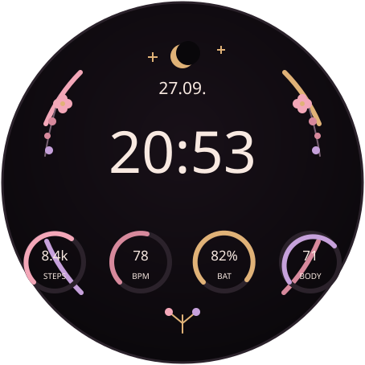

GARMIN CONNECT IQ · PROTOTYPE
Fleur
Ein feminines Garmin-Ziffernblatt mit Rosé, Gold und Flieder. Uhrzeit, Datum, Schritte, Puls, Akku und – wenn verfügbar – Body Battery in einem floralen AMOLED-Layout.

Im aktuellen Build
Live-DatenSchritte · Puls · Akku · Body Battery
AMOLEDReduzierter Always-on-Modus
ResponsiveFür runde Displays skaliert
Cloud BuildKeine lokale Entwicklungsumgebung nötig
Quellcode, Build-Workflow und Installationshinweise liegen im GitHub-Repository.